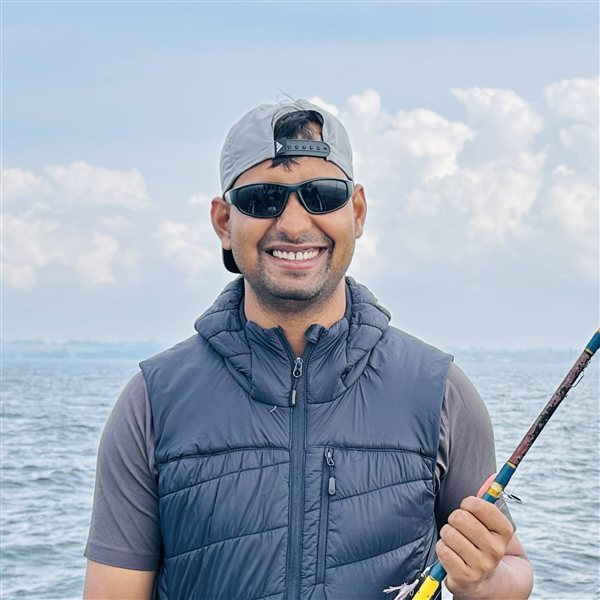

Software Consultant · Back-End Development & Simulation
Md Saiful Islam
Building robust back-end systems, optimized databases, and simulation-driven engineering for warehouse automation and beyond.
Malmö, Skåne County, Sweden

About
With over 15 years of experience in software development, I specialize in back-end engineering, database architecture, performance optimization, and simulation-driven systems.
I'm currently a Software Consultant at Sigma Technology Software Solutions, working with IMI Supply Chain Solutions on warehouse management and automation. My focus is building a simulation and unit-testing framework for a pick order release engine, using real customer-like data (Excel → JSON), parallel processing, and .NET back-end services to make warehouse processes more robust and predictable.
Previously, I worked at ALTEN Sweden as a System Consultant, contributing to a large-scale internal platform at Meta and developing cloud-native back-end APIs for the NIOX VERO medical device ecosystem. Before that, I led development of a blockchain-based proxy voting platform for NuArca, built on IBM Hyperledger Fabric for large financial institutions.
- Employee of the Year — 2017
- Employee of the Year — 2018
- Volvo Hackathon 2022 — The Assembly Line
- Finalist, Code Warriors' Challenge 2011
- National ICT Internship Program, Ministry of Science & ICT, Bangladesh
Skills
Backend & Languages
C#, .NET, Python, Go (Golang), Java, T-SQL
Data & Databases
SQL Server, PL/SQL, Database Optimization, Data Migration
Cloud & DevOps
Azure (Container Apps, SQL, Blob Storage, Key Vault), Docker, Kubernetes
Specialties
WMS, Blockchain (Hyperledger Fabric), Simulation & Testing Frameworks, REST APIs
Experience
Software Consultant — IMI Supply Chain Solutions
Sep 2025 – Present · HässleholmSigma Technology Software Solutions
- Built a Python-based pipeline transforming real customer data from Excel to JSON for realistic, data-driven one-day simulation scenarios.
- Collaborated on optimizing the pick order release algorithm (prioritization, thresholds, consolidation rules) based on simulation results.
- Implemented parallel JSON data loading and processing across persistent storage and in-memory structures to better reflect production behavior.
- Extended and maintained unit tests for release logic and infrastructure, improving reliability and catching edge cases early.
System Consultant — NIOX VERO (Medical Device)
May 2025 – Aug 2025 · GothenburgALTEN Sweden
- Built REST endpoints with C#/.NET Minimal APIs for a mobile companion app connected to the NIOX VERO medical device.
- Implemented JWT auth with refresh tokens and RBAC policies for access control.
- Maintained OpenAPI/Swagger documentation and Postman collections for onboarding and testing.
- Stack: C#, .NET Minimal API, SQL Server, Dapper, Azure Container Apps, Azure SQL, Blob Storage, Key Vault, Hangfire, OpenTelemetry.
Team Lead — on assignment at Meta
Aug 2023 – Apr 2025 · LundALTEN Sweden (via Sigma Connectivity)
- Built and enhanced scalable backend services and mobile features using Hack and React Native within a globally distributed Agile team.
- Handled on-call reliability engineering, diagnosing and resolving issues across critical environments.
- Guided sprint planning, mentored junior engineers, and contributed to internal frameworks and code review standards.
- Coordinated with product owners and engineers across time zones under strict NDA and security protocols.
Data Service Lead — Proxy Voting Platform (Blockchain)
Jan 2017 – May 2023 · DhakaNuArca
Secure, scalable proxy voting platform for AST (American Stock Transfer), built on IBM Hyperledger Fabric for transparent, auditable, regulation-compliant voting across public companies.
- Architected a hybrid backend combining SQL Server and private blockchain (Hyperledger Fabric) to manage vote records and compliance workflows.
- Designed secure REST APIs and microservices (Java/Spring Boot, Golang) bridging the blockchain and external applications.
- Engineered analytics pipelines and dashboards for real-time voting summaries and post-event compliance reports.
- Led system integration using Kafka, Docker, and Kubernetes; acted as Scrum Master across multiple time zones.
Senior Software Engineer Team Lead — WizNG (HMDA Compliance)
Dec 2014 – Dec 2016 · DhakaWolters Kluwer — Financial Services Solutions
Led development of WizNG, a next-generation HMDA compliance and reporting system used by 8 of the top 10 US banks, built with C#, ASP.NET MVC, Web API, SQL Server, and AngularJS.
System Developer — Trustpilot
May 2014 – Aug 2014 · DhakaGraphicPeople
Contributed to back-end scalability and performance for Trustpilot, an online customer review platform.
Senior Software Engineer — AML Compliance Solution
Feb 2012 – May 2014 · DhakaWolters Kluwer — Financial Services Solutions
Developed and enhanced an Anti-Money Laundering compliance platform (Java, Spring, Hibernate, SQL Server, Intellinx) for US financial institutions.
Software Engineer — HMDA Wiz
Oct 2011 – Aug 2012 · DhakaWolters Kluwer — Financial Services Solutions
Built the Edit Module for a web-based HMDA compliance and reporting tool using C# and Telerik RadGrid.
Software Engineer Intern / Software Engineer — Amar Hisahb POS
Sep 2010 – Sep 2011 · DhakaICT Alliance
Developed a Bangla-language POS solution for SMEs, covering data, business logic, and UI layers.
Education
Master's Degree, Data Science
University of Skövde
Aug 2022 – Jun 2024
B.Sc., Computer Science and Engineering
Ahsanullah University of Science and Technology
2006 – 2012
Get in Touch
I'm always open to discussing back-end engineering, database performance, and simulation-driven projects.